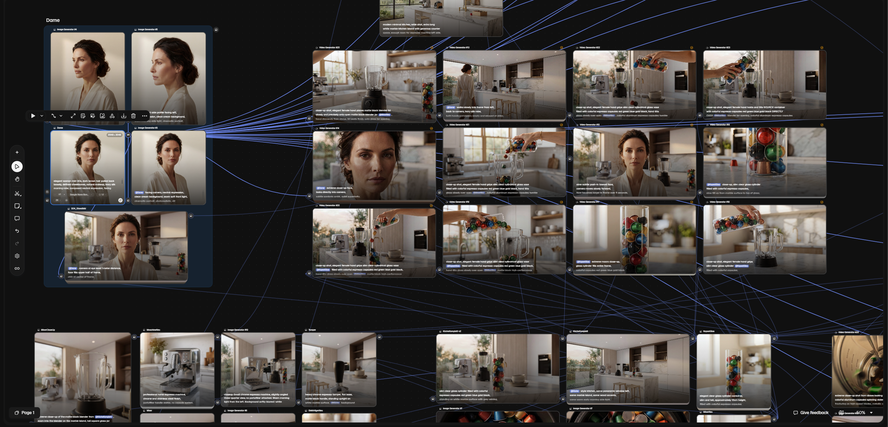
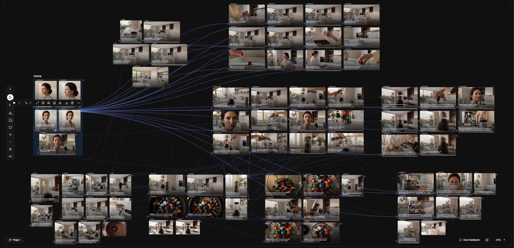

"What Else?"
Eine KI-Parodie.
Ein vollständig KI-generierter Werbespot in Anlehnung an den legendären Nespresso-Claim — entwickelt um zu verstehen, was heute mit KI-Video wirklich möglich ist. Und wo die Grenzen noch liegen.
▶ Klicken zum Abspielen · "What Else?" – KI-Parodie · GeoPic 2026
Von der Idee
zum fertigen Spot.
Was passiert, wenn man einen der bekanntesten Werbeauftritte der Welt als Vorlage nimmt — und ihn komplett ohne Kamera, ohne Location, ohne Schauspieler und ohne klassische Postproduktion neu erschafft?
Die Nespresso-Kampagne mit George Clooney gilt als Ikone der Werbegeschichte — mit ihrer spezifischen Bildsprache, dem Licht, der Eleganz, dem Rhythmus. Genau diese Qualitätsmerkmale dienten als Benchmark: Wie nah kommt man heute mit KI-Werkzeugen an diese Produktionsqualität heran?
Das Ergebnis ist ehrlich: manche Shots überraschen positiv, andere zeigen klar die aktuellen Grenzen der Technologie. Genau das war das Ziel — kein geschöntes Demo, sondern ein realer Stresstest.
Was gut lief —
und was noch nicht.
Ein ehrlicher Bericht. Ohne Marketingsprache.
- Atmosphäre & Licht
Der typische Nespresso-Look — warmes Licht, helle Küche, Marmoroberflächen — ließ sich erstaunlich präzise reproduzieren. KI beherrscht Stimmungsräume heute sehr gut. - Produkt-Shots
Statische oder langsam bewegte Objekte wie Tasse, Tamper und Glasvase erreichten eine Qualität, die man in klassischen Produktionen nicht für diesen Aufwand bekommt. - Charakter-Konsistenz innerhalb einer Szene
Die Hauptfigur ließ sich innerhalb einzelner Shots überzeugend und stimmig darstellen. - Workflow-Geschwindigkeit
Was früher Wochen an Produktion bedeutet hätte, war in Tagen iterierbar. Das Verhältnis aus Aufwand und Ergebnis ist bemerkenswert. - Gesamtimpression
Auf dem Bildschirm, im Rhythmus eines Spots, funktioniert das Ergebnis. Die Schnitttechnik kann viel kaschieren und zusammenhalten.
- Shot-zu-Shot-Konsistenz
Denselben Charakter über mehrere Einstellungen hinweg konsistent zu halten, ist nach wie vor die größte Herausforderung. Kleine Abweichungen in Gesicht oder Kleidung zwischen Cuts fallen auf. - Hände & feine Motorik
Das klassische KI-Problem: Hände greifen, drehen, halten — dabei entstehen immer noch Fehler, die im Schnitt umgangen werden müssen. - Komplexe Kamerabewegungen
Dolly-Moves und komplexe Kamerafahrten, die einen echten Raum glaubwürdig durchqueren, sind noch nicht zuverlässig steuerbar. - Physikalische Interaktion
Flüssigkeiten, Dampf, das Einschenken einer Tasse — Momente, die in echten Nespresso-Spots ikonisch sind, brauchen noch viel Glück oder Nachbearbeitung. - Sound & Voice
KI-Video liefert kein Audio. Ton, Musik und ein glaubwürdiger Voice-Over sind weiterhin klassische Produktionsaufgaben — oder eigene KI-Workflows.
Wie der Spot
entstanden ist.
Der Produktionsprozess war iterativ und non-linear — typisch für KI-Produktionen, die noch keine standardisierten Pipelines kennen.
Szenenstruktur, Bildsprache und Shot-Liste wurden klassisch entwickelt — mit dem Nespresso-Original als visuelle Referenz. Was der Spot zeigen soll, muss vor dem Prompting klar sein.
Charaktere, Räume und Produkt-Shots wurden als Standbilder entwickelt und iteriert, bevor sie in Video überführt wurden. Die Bildqualität bestimmt die Videoqualität maßgeblich.
Aus den Standbildern wurden animierte Shots generiert. Das Workflow-Bild zeigt die Struktur: viele Varianten pro Szene, aus denen die besten ausgewählt wurden.
Der Schnitt ist entscheidend: Rhythm, Pacing und die richtige Shot-Auswahl machen aus guten Einzelshots einen Spot, der funktioniert. Klassische Filmhandwerk-Regeln gelten auch hier.
Ton, Atmo und Musik sind eigenständige Workflows. KI-Video liefert kein Audio — was auch bedeutet, dass der Soundbereich im Zeit- und Kostenplan nicht unterschätzt werden sollte.
Farbkorrektur, finale Qualitätskontrolle und Export für Web. KI-Outputs brauchen oft noch Grading, um einen konsistenten Look über den gesamten Spot hinweg zu erzielen.


Ausgewählte Shots.
Standbilder aus dem Produktionsprozess — generierte Szenen, Charaktere und Produkt-Shots, die den visuellen Ansatz des Spots illustrieren.


Regiebuch & Konzept.
Das Regiebuch dokumentiert Konzept, Bildsprache, Shot-Beschreibungen und die visuelle Strategie hinter dem Spot.
Was dieser Spot
beweist.
KI-Video ist kein Ersatz für klassische Filmproduktion — aber es ist ein ernstzunehmendes Werkzeug für alle, die wissen, was sie damit tun. Die Stärke liegt nicht im blinden Generieren, sondern in der Kombination aus gestalterischer Erfahrung, gezieltem Prompting und einem guten Auge im Schnitt.
Wer 19 Jahre Erfahrung in der visuellen Kommunikation mitbringt, bekommt mit KI-Werkzeugen eine enorme Hebelwirkung. Die Technologie ersetzt das Handwerk nicht — sie verstärkt es. Und das Nespresso-Projekt war der Beweis, dass auch hochwertige Marken-Ästhetik heute KI-gestützt erreichbar ist.